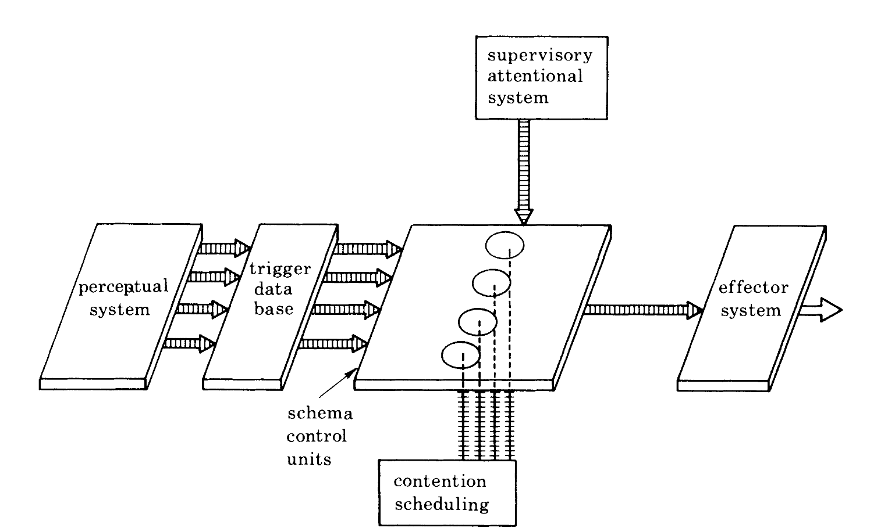
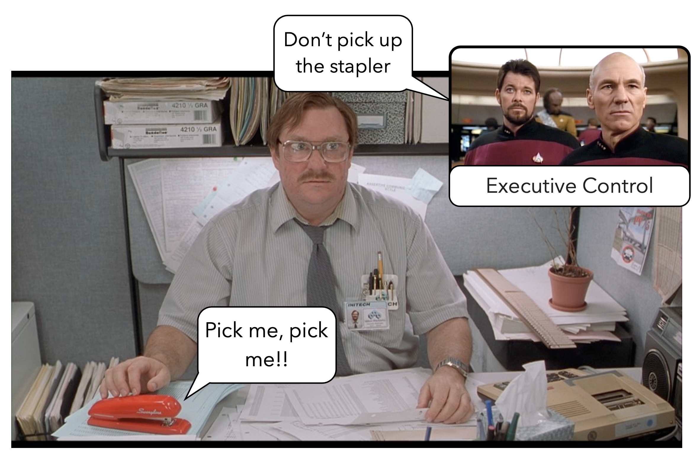
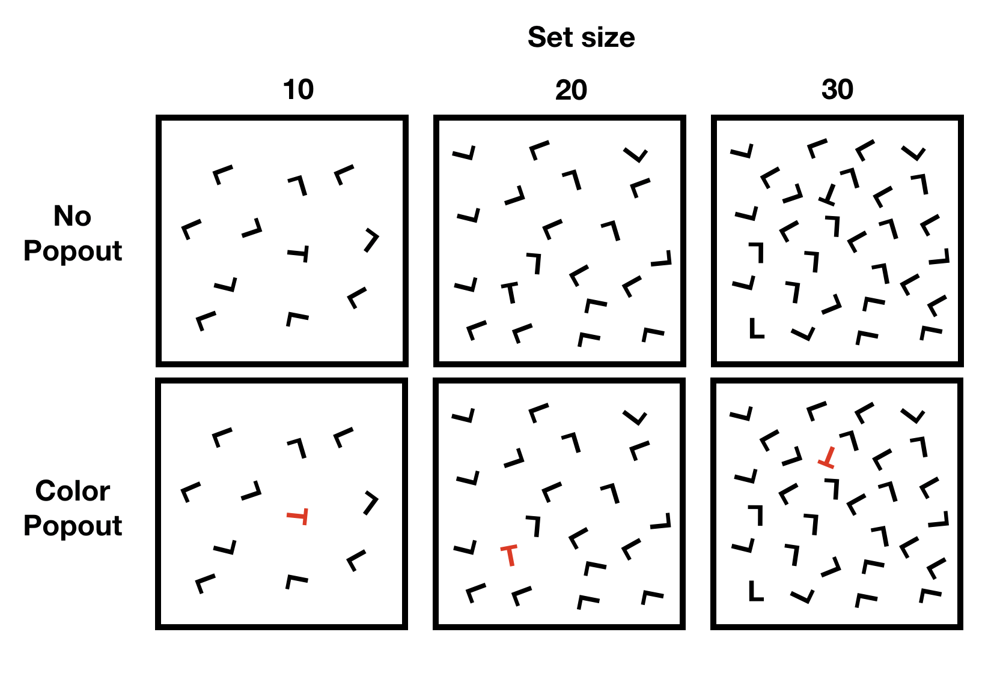
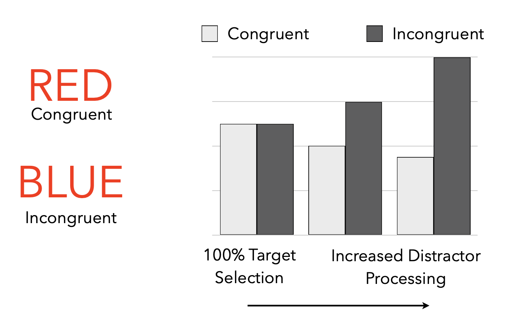
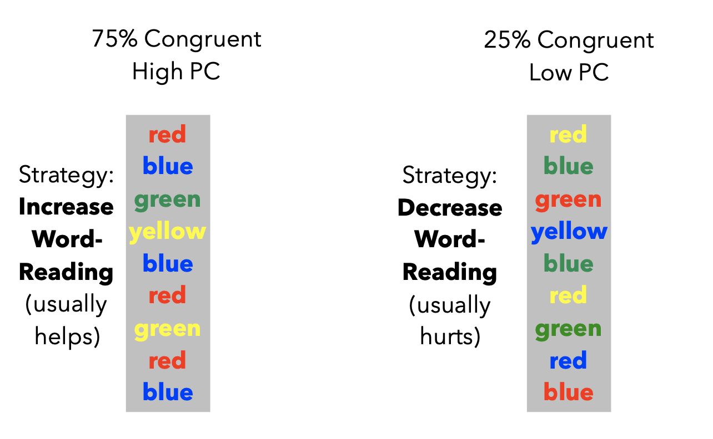
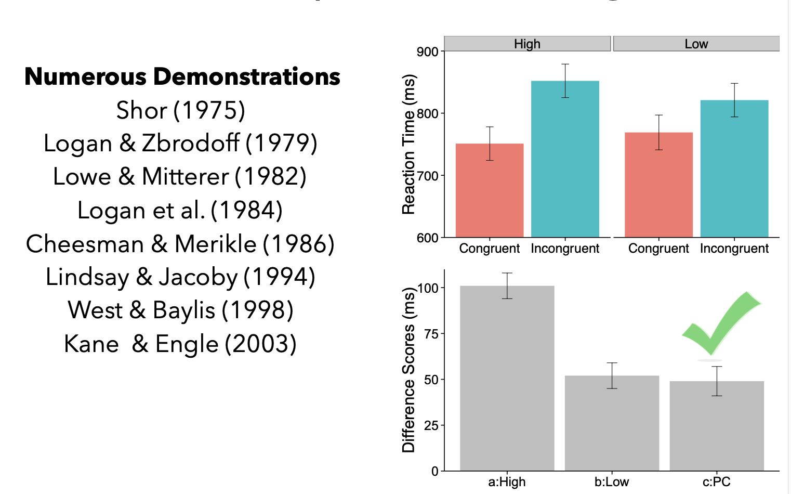

PSYC 2530: Attention
and the Stroop effect
Matthew J. C. Crump
Last compiled 04/23/22
Reminders from last class
There are no textbook chapter readings for this learning module.
Roadmap
1 Attentional Concepts and Phenomena
What is Attention?
Everybody knows what attention is… - William James
What is Attention?
- How we prioritize our mental resources
- How we select relevant from irrelevant information
- How we focus
- How we ignore
Attentional Distinctions
Endogenous Attention
- Internal “orienting” of attention
- Voluntary decision to attend to some information and not others
Exogenous Attention
- External “orienting” of attention
- Some stimuli automatically cause people to attend to them (e.g., loud noises)
Controlled vs automatic influences
Controlled
- Effortful
- Voluntary
- Deliberate
- usually resource limited
- slow
Automatic
- Effortless
- fast, rapid, ballistic
- Involuntary
Attentional Theory
There are multiple theoretical frameworks for understanding attention
- (see additional reading on blackboard for a review)
- Strayer, D. A., & Drews, F. A. (2007). Attention. In F. T. Durso (Ed.), Handbook of Applied Cognition (2nd Edition, p. 26). John Wiley & Sons, Ltd.
Attention to Action
Norman and Shallice’s Attention to Action theory

Figure from Shallice, T. (1982). Specific Impairments of Planning. Philosophical Transactions of the Royal Society of London. Series B, Biological Sciences, 298, 199–209.
S-R learning and Supervisory Attention

Attention tasks and phenomena
- Researchers devise laboratory tasks that require attentional processing
- Measures of task performance are used to demonstrate phenomena of attention, and to test theories of attention
Some Attentional phenomena
Visual Search and pop-out

Attentional Cuing
- What are the consequences of attending to something?
- How can we measure what attention does to information processing?
Roadmap
1 Attentional Concepts and Phenomena
Selective Attention
- The ability to “selectively” focus or process task-relevant information
- and ignore or avoid processing task-irrelevant information
- Selective attention abilities are commonly studied in congruency tasks, like the Stroop Task
Measuring Selective Attention

List-wide proportion congruent

List-wide proportion congruent results

Explanation
- What processes are responsible for the list-wide proportion congruent effect?
- Strategic Account
- Learning Account
Strategic Account
Participants can predict congruency of upcoming trial
- 75% congruent-> Prepare in advance of trial to attend to word dimension (because it is easy and fast)
- 25% congruent -> Prepare in advance of trial to ignore word dimension
Learning Account
- Some Stroop items are presented more than others
- RTs are faster for more frequent (more practice) than less frequent items
Processing accounts
- Simple stimulus-response learning
Roadmap
1 Attentional Concepts and Phenomena
Testing Voluntary Control
Let’s conduct an in-class experiment on the Stroop experiment
Question
Can people voluntarily control how they attend to word-information?
Logic
- If people can choose to ignore word information then the Stroop effect should get smaller
- If people can increase their focus on word information then the Stroop effect should get larger
Instructional Manipulation
IGNORE WORD Instructions
- Tell people to ignore word information while they do a Stroop task
FOCUS on WORDS Instructions
- Tell people to focus on word information while they do a Stroop task
Predictions
- What do we predict will happen?
- What would our results look like in a graph?
Try it out
Head to the first assignment in this learning module to try out the experiment for yourself.
What’s next
Take the quiz and complete any additional assignments
Next week is the second last module of the term, on langauge